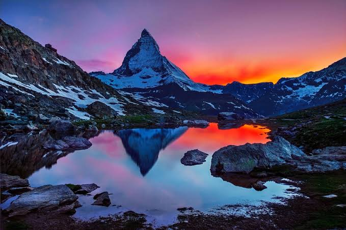

Il tramonto sul Cervino offre uno spettacolo naturale straordinario, in cui la luce del sole incendia la caratteristica piramide rocciosa di 4.478 metri al confine tra Italia e Svizzera.Punti panoramici miglioriRifugio Teodulo: Situato a 3.317 metri di quota, regala riprese e visuali mozzafiato sulla cima.Capanna Carrel: Ottima postazione lungo la Cresta del Leone per vivere l'alta quota.Gran Balconata del Cervino: Un itinerario escursionistico di circa 70 chilometri in Valtournenche, con magnifici affacci panoramici sul Cervinia.Caratteristiche del fenomenoIl gioco di luci: L'ombra della sera sale lentamente lungo la parete, mettendo in risalto la roccia e illuminando la parete ovest con tonalità calde e intense prima del buio.La visibilità: Nelle giornate limpide, il profilo inconfondibile della montagna si staglia netto contro il cielo alpino.